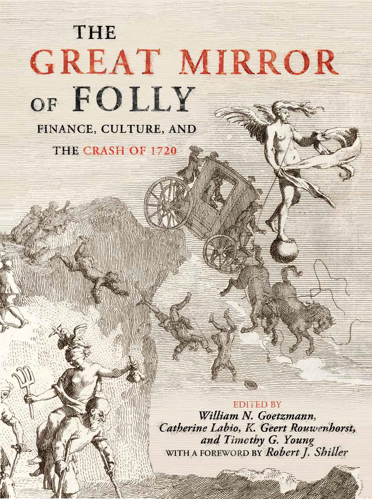
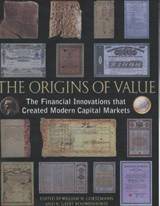
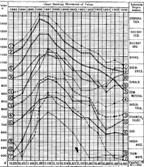

William N. Goetzmann
Edwin J. Beinecke Professor of Finance and Management Studies
Faculty Director, International Center for Finance · Director, SOM Executive M.B.A. in Asset Management
William Goetzmann is the Edwin J. Beinecke Professor of Finance and Management Studies, the faculty director of the International Center for Finance and director of the SOM Executive M.B.A. in Asset Management.
Goetzmann is a Research Associate of the National Bureau of Economic Research, and has served as the president of the Western Finance Association and the European Finance Association. He teaches courses in investments, real estate and financial history. He is an expert on financial markets and securities, investment strategies, investor behavior and financial history.
His published books include: Money Changes Everything: How Finance Made Civilization Possible (Princeton University Press, 2016), The Great Mirror of Folly: Finance, Culture, and the Crash of 1720, ed. (Yale University Press, 2013), The Origins of Corporations: The Mills of Toulouse in the Middle Ages, ed. (Yale University Press, 2015), The Origins of Value: The Financial Innovations that Created the Modern Financial Markets (Oxford, 2005), The Equity Risk Premium: Essays and Explorations, with Roger Ibbotson (Oxford, 2006), Modern Portfolio Theory and Investment Analysis, with Elton, Gruber & Brown (John Wiley and Sons, 2006 and following), and The West of the Imagination, with W. H. Goetzmann (Oklahoma University Press, 1986 & 2009).
|
|
||||||
|
|
International Center
For Finance at the Yale School of Management An interdisciplinary research
center at Yale for the study of Finance. The ICF sponsors a number of
academic conferences during the year on current issues in Finance. It
provides data to its fellows for research and fosters intellectual
interaction among scholars at Yale and in other schools who work on Financial
issues. |
|||||
| ||||||
| ||||||
Global Stock Markets in the Twentieth Century Jorion & Goetzmann’s database of monthly capital-appreciation indexes for 39 markets, 1919–1996, in both US-dollar and inflation-adjusted terms. An interactive explorer lets you click markets on and off to compare their long-run paths, with the underlying Excel and CSV files free to download. | ||||||
The Origins of the Corporation With David le Bris and Sébastien Pouget — six centuries of share prices from the Bazacle company of Toulouse (1372–1946), one of the world’s first joint-stock corporations. An interactive chart, the documentary record from the Toulouse archives (the founder’s share, the mills, the registers), and downloadable data. | ||||||
The First Financial Bubble: London, Paris & the Netherlands, 1720 With Rik Frehen and Geert Rouwenhorst — a daily database of share prices from the three markets caught up in the world’s first international stock-market bubble. An interactive chart of the South Sea, Mississippi and Dutch companies rising and crashing together, the satirical prints of the Groote Tafereel der Dwaasheid, and downloadable data. | ||||||
|
 |
The Great Mirror of Folly: Finance, Culture, and the Crash of 1720
William N. Goetzmann, Catherine Labio, K. Geert Rouwenhorst and Timothy Young (Editors), Robert Shiller (Foreword). Yale University Press, Yale Series in Economic and Financial History
|
|||||
Money Changes Everything: How Finance Made Civilization Possible Princeton University Press, 2016. A sweeping history of finance and its part in the growth of civilization — from the temple accounts of ancient Mesopotamia and the financial machinery of imperial China and Rome to the joint-stock companies and sovereign debt of early-modern Europe. The argument: finance is a technology of time, a way of moving value across the centuries, and it has been one of the driving forces of human history. Errata. | ||||||
|
|
The
Equity Risk Premium: Essays and Explorations Roger Ibbotson and I have assembled
our separate and co-authored research papers related to the equity risk
premium into a volume. We have added
additional new work and interpretive material. |
|||||
|
 |
The Origins of Value: the Financial Innovations that
Created Modern Capital Markets
Geert Rouwenhorst and I have edited a volume of essays for the |
|||||
Financial History at the International Center for Finance The ICF has been constructing databases of individual security prices in global markets over the 19th and 20th centuries. These data are freely available for downloading at the ICF website. Now available: | ||||||
Old New York Stock Exchange Project Monthly individual NYSE stock prices from 1816 to 1926 and annual dividend data for much of the same period. See A New Historical Database for the NYSE 1815–1925: Performance and Predictability for a data description and some evidence on predictability. | ||||||
| The Investor’s Monthly Manual contains a complete record of the London Exchange from 1869 to 1930. Monthly individual securities data may be downloaded in spreadsheet form. It includes corporate securities and sovereign and municipal debt from all over the world. | |||||
St. Petersburg Stock Exchange Project Monthly data for all equities on the St. Petersburg Exchange, 1865 to 1917; PDF files of the hard copy in Russian are available. See the associated paper, Momentum in Imperial Russia (Journal of Financial Economics, 2018). | ||||||
| Shanghai Stock Exchange Project Monthly data for equities on the Shanghai Stock Exchange, 1870 to 1940. | |||||
|
Dow Theory — The Hamilton Agent Stephen Brown, Alok Kumar and I studied the performance of the Dow Theory over 1903 to the present, using the market editorials of William Peter Hamilton to simulate the returns an investor following the theory would have earned (working paper; Journal of Finance, 1998). |
||||||
|
An Introduction
to Investment Theory A hyper-text book for
first-year MBA and MPPM students introducing the basic models of investment
theory. Designed to be used in an eight-week first course in investments. |
||||||
|
 |
Henry Lowenfeld.s
_Investment and Exact Science
published in |
|||||
|
|
Michael Edelstein.s book Overseas Investment in the Age of High
Imperialism is the first major study to use modern portfolio theory to
examine the question of British overseas investment._ His work is based on
the construction of time series indices from the Investors Monthly Manual._
He has generously made the data
appendices from his book available for download through the website of
the International Center for Finance at the Yale School of Management. |
|||||
|
The Entemena Inscription in the Yale Babylonian Collection is the oldest know example of compound interest calculation. It dates from about 2,500 BCE and commemorates the defeat of the city of Umma by the city of Lagash. Lagash claims reparations for decades of occupation of the agricultural land along the border. The reparations are calculated by compounding at 33 1/3 percent per year. View the 3-D scan of the cone digitized by Yale’s Peabody Museum. |
||||||
|
|
Finance in the Oxyrhnchus
Papyri: An early bank check? Document 2772 in The Oxyrhnchus Papyri volume XXXVI_ is entitled .Instructions
to a Banker.. Written in 10 or 11 A.D., it is part of the famous trove of
papyri documents discovered in Translation:_ .Julius Lepos to Archibius the banker greeting. Pay to my account with Harpochration the banker one thousand nine hundred and
fifty three drachmas of silver. Total 1953 dr year
40 of Caesar, Pachon 3.. The text suggests that
Julius and Harpochration both have accounts with
the banker Archibius and Julius is instructing the
transfer from one account to the other.
It is one of a number of diagraphs from papyri collections. |
|||||
|
|
The
West of the Imagination A
new edition from Oklahoma University Press, 2009. We have added several new
chapters to our book. Additions include chapters on |
|||||
About Town: A New Look at Yale and New Haven Overland Press, 1977. My first book — color drawings of the university and the city, with Tom Hendricks and an introduction by Frank Logue. Above: the bustling intersection of York and Elm Streets. | ||||||
Will + Zoe — Design Differently A design venture offering boldly colored, geometrically patterned silk ties. Design differently. | ||||||
|
A
Portfolio of Paintings of Egypt Some paintings of classic |
||||||


William N. Goetzmann
Yale School of Management · 165 Whitney Avenue · New Haven, CT 06511
william.goetzmann@yale.edu
|Yale Home Page
|SOM Main Page |SOM Public Pages |Send Mail to Me |
|
|
|
|
© 1995 Will Goetzmann. |
|